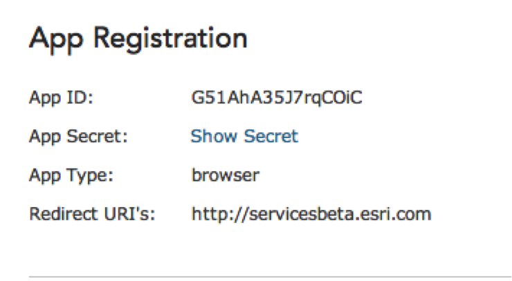

Hide Table of Contents
Hide Table of Contents
 Tutorials
About the API
Work with the API
Graphics and feature layers
Popups and Info Windows
Geoprocessor
Operations Dashboard
Create extensions
Mobile
ArcGIS Server Services
References
What's New archive
Tutorials
About the API
Work with the API
Graphics and feature layers
Popups and Info Windows
Geoprocessor
Operations Dashboard
Create extensions
Mobile
ArcGIS Server Services
References
What's New archive
This guide covers how to build applications using the ArcGIS API for JavaScript that access secure content using one of the following authentication methods
Authentication is used to restrict access to your content to an authorized set of users. This secure content can be a secured ArcGIS Server service or maps and data from ArcGIS Online.
User versus application logins
User and application logins define how end users interact with the application and whether the credentials they supply are known to the platform. In other words, when a user logs in, will the platform recognize the login information and know how to work with it directly? If so this is the user login approach otherwise it’s an application login.
Note: In this topic the term platform means an ArcGIS Server service secured using token-based authentication, ArcGIS Online or an ArcGIS Portal installation along with all associated services.
User logins
User logins target end users of the platform. The application provides a dialog that allows users to login with credentials that are known to the platform. One scenario where you might use the user login approach is when building an application that access an ArcGIS Server service secured with token-based authentication. If an application tries to access a secure service, a valid token is required to unlock the service. For example, a web application that accesses a secure service can be configured to prompt a user for their username and password credentials. The end user needs to have permissions set with the platform so that their credentials can unlock the service.
Managing users and their roles can be handled various ways in ArcGIS Server. Please see the Configuring ArcGIS Server Security for additional information.
Application logins
The application login approach is used when the application authenticates with the platform on behalf of itself. In this scenario an application that is registered with the platform can log in without requiring application end users to log in using platform credentials. This means you can build applications that provide anonymous access to the resources. Be aware that applications using the application login approach are susceptible to misuse. Developers can build logic into the application to try and limit misuse using techniques like IP address checking and rate limiting.
OAuth 2.0 based authentication
OAuth 2.0 based authentication is available for applications registered with ArcGIS Online or Portal for ArcGIS. If you are an application developer with an organizational account, you can register your application. Please see the Register your App section in the ArcGIS Online help topic for steps on how to do this.
Once you’ve registered your application you will have access to the registration information that includes an application id (AppID) and an application secret (AppSecret). 
The screen capture above displays the registered application's ID, type, and redirect URI's.
OAuth 2.0 and user logins
When working with OAuth–based authentication you can use either user or application logins. Applications that support user logins use OAuth 2 to allow users to log in to the ArcGIS platform via a login page. Once the user logs in the application receives a user access token that it can use to access the platform on behalf of the user. This token needs to be sent to the platform with all requests.
Beginning with version 3.10, support for OAuth2 authentication is provided directly in the ArcGIS for JavaScript API's Identity Manager. This built-in functionality handles a lot of the fine-grained work that you would typically have to do when implementing this type of authentication.
The Identity Manager component simplifies the process of working with the token by appending it to requests and acquiring a new token when necessary. All you need to do is create an OAuthInfo object and specify the appId you received when registering your application. Additionally, you can set the popup property to true if you want to display the OAuth sign-in page in a popup window. After this is set, pass this OAuthInfo object to the IdentityManager's registerOauthInfos method and the Identity Manager takes care of the rest.
var info = new ArcGISOAuthInfo({
appId: "",
popup: true
});
esriId.registerOAuthInfos([info]);
Review the OAuth 2.0 samples to see how to build a user login type application using OAuth 2.0 and the Identity Manager.
OAuth 2.0 authentication and application logins
Applications that target end users who are not known to the platform use app logins to connect to the platform. In this case the application will login to the platform on behalf of the application and application end users will not be prompted for their credentials. Applications that use app logins must use both the OAuth 2 AppID and AppSecret.
Malicious users that gain access to both the AppID and AppSecret can access billable services on ArcGIS.com, which will be billed to the application developer’s organization. Developers are responsible for keeping the AppSecret a secret, including from users who inspect JavaScript source using developer tools. This implies that the application will need to have a server-side application component that keeps the application credentials secure. The server-side component can add additional checks to prevent misuse of the credentials such as IP address checks and built-in rate limiting.
Please see the Sharing maps with secure layers tutorial to get a better understanding of how a server side component can access a token via OAuth and application logins.
You may also want to review the Using the proxy help topic for details on how to work with the proxy from an application built with the ArcGIS API for JavaScript.
Additional information regarding authentication can be found at:
Token based authentication
Token-based authentication services require that a token be included in each request for a map, query, etc. A token is an encrypted string that is derived from information about the authorized user, date and time, and client making the request.
ArcGIS Server, ArcGIS Online and Portal for ArcGIS all support token-based authentication via a token service that can be used with both application and user logins. Upon successful authentication the token service returns an access token that needs to be appended to all future requests.
The request to the token service must be made over HTTPS and all subsequent requests that use the token also need to be made over HTTPS if required by the resource.
Token based authentication and user logins
Applications that support user logins are responsible for providing a login dialog that prompts users for their credentials. The application is responsible for keeping these credentials secure by transmitting them over HTTPS.
If you are building an application that accesses resources from ArcGIS Online, Portal for ArcGIS or services from ArcGIS Server 10.0 SP or later the recommended approach is to use the Identity Manager to handle the process of gathering the credentials and acquiring and using the token. To use the Identity Manager simply add the esri/IdentityManager module to your application.
require([
"esri/map","esri/IdentityManager","dojo/domReady!"
], function (Map, esriId) {
...
});
If you are accessing the token service via a cross-domain request and both the browser and web server support CORS the ArcGIS API for JavaScript can make a request from an HTTP page to the token service over HTTPS. If CORS support is not available you will need to setup and use a proxy page. The proxy page will then communicate with the token service via HTTPS. In the case of Internet Explorer the entire application needs to be accessed via HTTPS. View the Using the proxy help topic for details.
If your application contains ArcGIS Server services built with a version earlier than 10.0 SP1 you can build an application that prompts users at login for their credentials. Once you have the credentials use esri.request to request a token from the token service. View the Security sample for a demonstration of this pattern.
Review the Identity Manger samples for examples of how to work with secure resources via token-based authentication.
Token based authentication and app logins
Applications that access secured resources using token-based authentication can do so via an application login approach. This occurs when the user does not log in to the application by supplying credentials. Rather, a generic 'user' will need to be provisioned with a supplied username and password. These credentials are then provided when making a request for a token to the token service.
Developers are responsible for keeping the credentials a secret, including from users who inspect browser source code using developer tools. This implies that the application will need to have a server side application component that keeps the application credentials secure.
One way to do this would be via a proxy server-side component. The proxy could be written to handle storing credentials, acquiring the token, and appending the token to all requests. View the resource proxy on GitHub for an example.
HTTP/Windows authentication
When a request is made to a service secured with HTTP authentication (including Windows authentication using IIS), the server issues an authentication challenge. The application or user must respond with appropriate user credentials using standard HTTP authentication methods.
The two approaches to accessing a secured service using HTTP/Windows authentication are as follows:
- Use server-side code (ASP.NET, JSP, PHP, and so on) to set an identity for the request. The server sends the request with the identity; the end user does not need to log in. For more information, see Using the proxy.
- Do not supply any credentials within your application. Instead, let the server challenge the browser user. The user will see a login dialog box in the browser and must provide a valid user name and password for the ArcGIS Server system that issued the challenge. Work with your system administrator to ensure that end users have login information. If you are the administrator of the ArcGIS Server system, consult the Help, under the topic on securing services, for information on creating and managing user accounts.